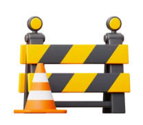

O ícone do card vira a barreira, o nome continua. Clicar mostra "Em construção — em breve".

Pra você (dono), o card continua com o ícone normal e abre normal — só leva a etiqueta "🚧 em construção (todos veem)".
Hoje: apagado pela metade + contorno tracejado. Opções: